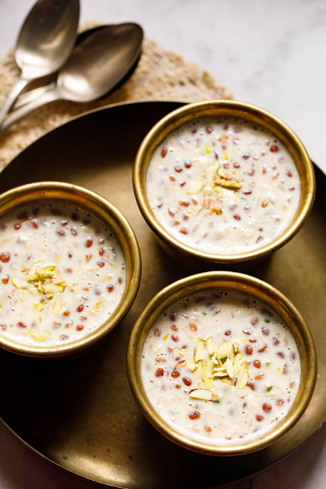

| Image | Dish | Popular Area | Description | Price |
|---|---|---|---|---|
 |
Shrikhand | Sadashiv Peth | Thick yogurt dessert with saffron and cardamom | ₹50 - ₹70 |
 |
Jalebi | Budhwar Peth | Crispy spiral dipped in sugar syrup | ₹20 - ₹40 |
 |
Kharvas | Deccan | Milk pudding made from colostrum milk | ₹40 - ₹60 |
 |
Ukdiche Modak | Shaniwarwada | Steamed rice dumpling filled with jaggery and coconut | ₹30 - ₹50 |
|  | Basundi | Navi Peth | Thick sweet milk flavored with cardamom | ₹40 - ₹60 |